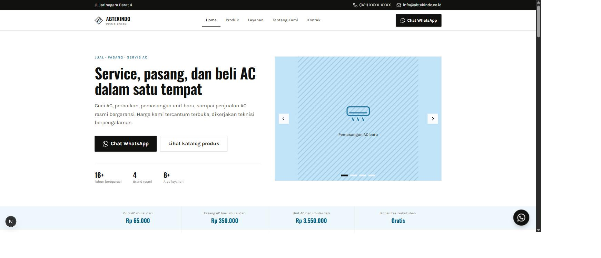
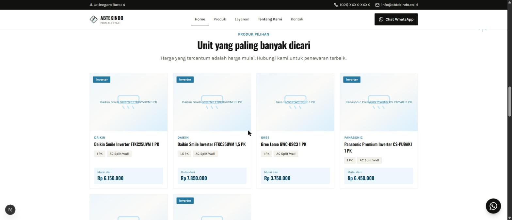
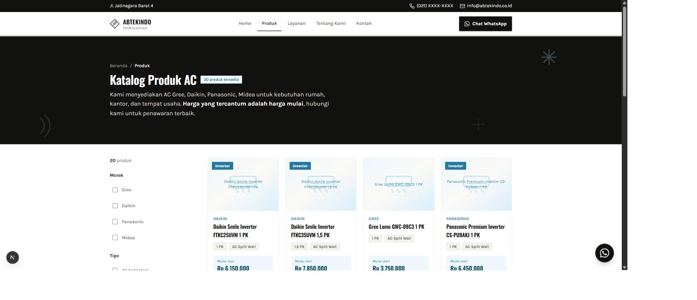
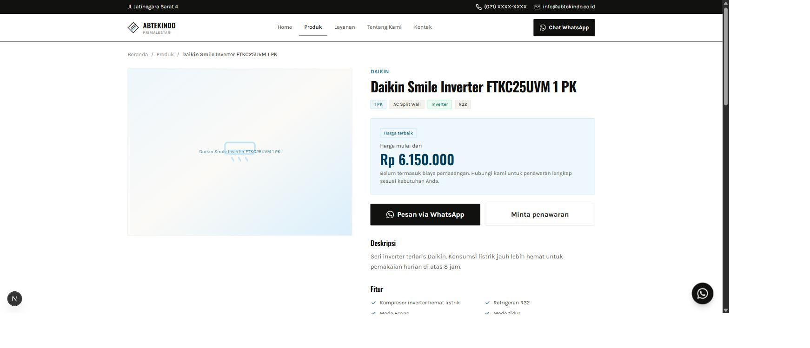
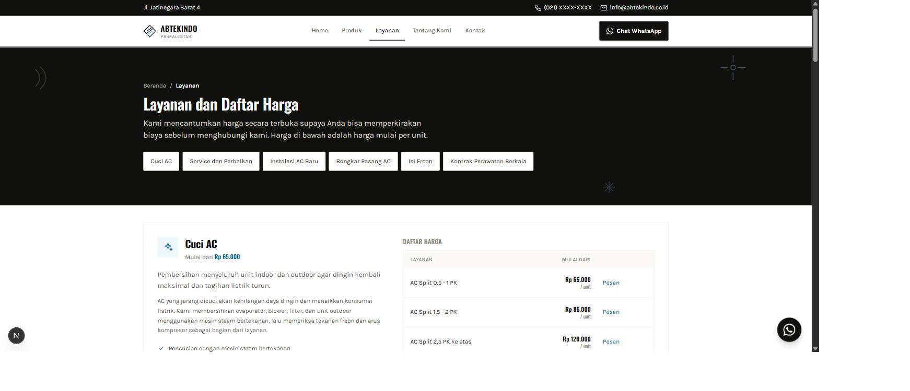
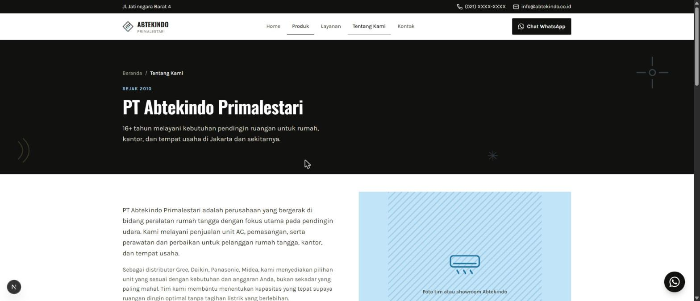
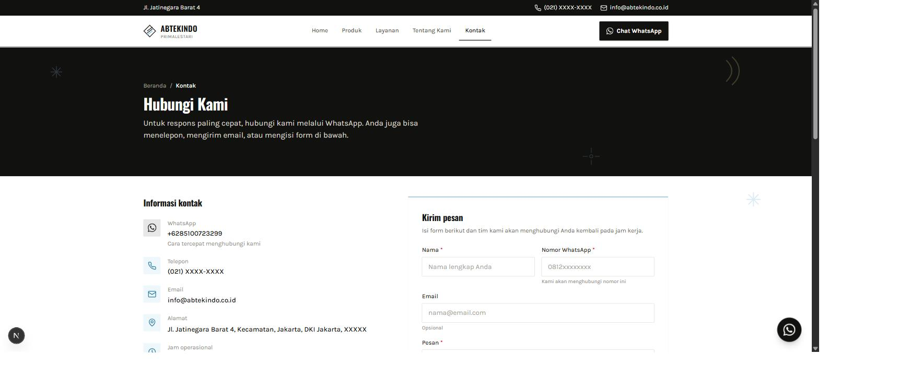

This is a review surface, not a mock. Every screenshot is a live capture of the actual
running site at
localhost:3000. If something looks wrong here, it's wrong on the
real page too — point at it and it gets fixed there.
Homepage — hero
app/page.tsx · components/home/Hero.tsx, HeroCarousel.tsx

- Carousel arrows are always visible (not hover-only) since most traffic here is mobile/touch.
- Stat row only shows numbers the codebase can back: years active, brand count, service-area count — nothing invented.
- Removed the floating price/trust cards that used to sit on top of the hero photo, per the brief.
- Fixed: the decorative snowflake scribble that was overlapping the eyebrow text has been removed.
Homepage — services & products
components/home/Sections.tsx

- Prices sit in their own tinted box on every card so they read as the headline fact, not a footnote.
- Icon tiles alternate blue/gold so the section doesn't read as monochrome-plus-blue.
- Fixed: "Produk pilihan" heading is centered again, matching every other section — it had drifted left-aligned.
- Fixed: product cards with shorter content (e.g. "Gree Lomo") were shrinking narrower than their neighbors — a missing
w-fullon the card link inside its flex grid cell. Same bug existed on service cards; fixed both.
Product catalog
app/produk/page.tsx · components/product/ProductCard.tsx

- Filters, grid and pagination are functionally untouched — only the visual language changed.
- Live "20 produk tersedia" badge next to the title, not a static claim.
- Changed: header band is now the same black hero treatment as About/Layanan/Contact, with scattered scribbles and matched height.
Product detail
app/produk/[slug]/page.tsx

- Price box promoted to a bordered, tinted card with a "Harga terbaik" badge — it's now unmistakably the page's focal point.
Services & price list
app/layanan/page.tsx · components/service/ServiceCard.tsx

- Rate-table prices set in the display face (Oswald) so they scan faster down the column.
- Changed: header band now matches the same black hero treatment and height as the other pages.
About
app/tentang-kami/page.tsx

- The one page the brief said to make purely aesthetic — dark intro band, hero-style diagonal photo panel, scribble motifs.
- Changed: a couple more scribbles scattered across the intro band and the area-coverage section, kept clear of all text.
Contact
app/kontak/page.tsx · components/contact/ContactForm.tsx

- Real WhatsApp number (+6285100723299) and address (Jl. Jatinegara Barat 4) now live throughout.
- Form card got a brand-colored top-border accent to match the signature look used on About's value cards.
- Changed: header band now black to match every other page, height matched, and scribbles added there plus around the info/form area and the coverage section.
Aesthetic-led page
UX-led page
Note / caveat